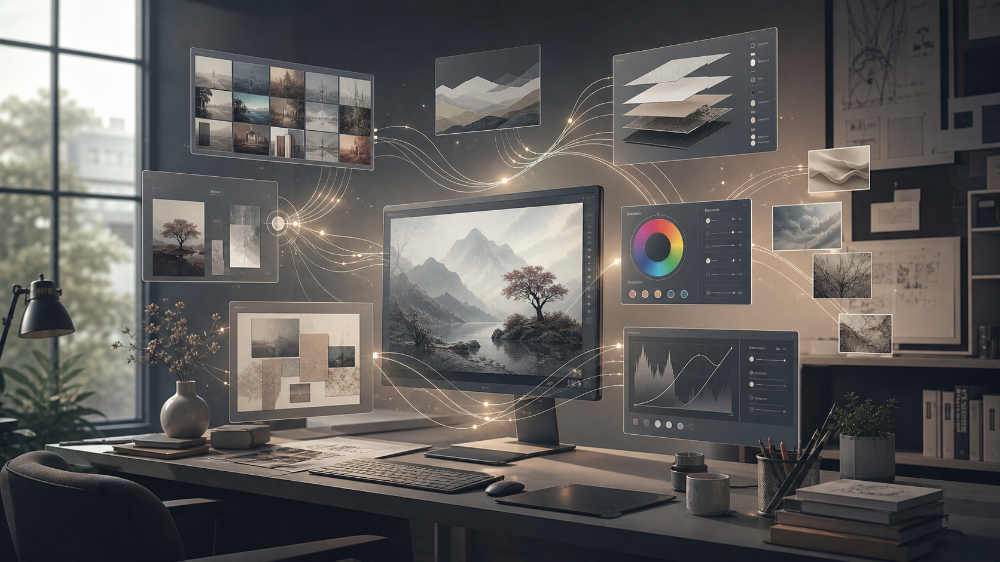

이미지Adobe2026-06-15
Adobe Creative Cloud, 선별부터 합성까지 창작 워크플로우 전반에 AI 기능 확장
Adobe는 사진 선별, 편집, 합성 등 Creative Cloud 작업 전반에 걸친 신규 AI 기능을 공개했습니다. 개별 생성 기능보다 작업 흐름 전체에서 반복 판단과 편집 단계를 줄이는 방향이 강조됩니다.
어떻게 써볼까? AI가 별도 메뉴가 아니라 기존 창작 도구의 기본 인프라로 들어가고 있다는 신호입니다. 학생들에게 “AI 툴 하나를 배운다”보다 “기존 제작 프로세스 중 어디가 자동화되는가”를 보게 하는 것이 중요합니다.